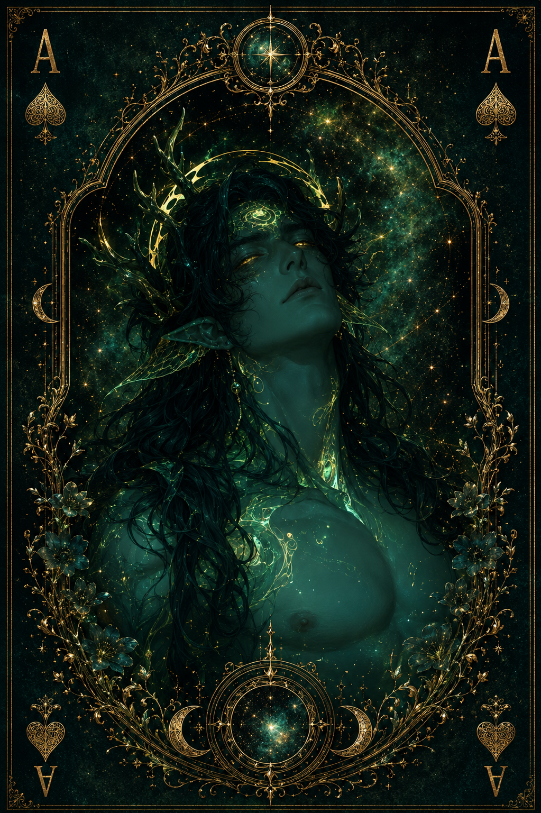

| Race | Primordial Nature Spirit |
| Gender | Male |
| Age | Unknown |
| Nation | Eliondra |
| Weapon | Nature Itself |
| Magic | Primordial Nature Magic |
Thalassor is an ancient nature spirit said to have been born from the tear of a goddess of nature. He is not simply a creature who inhabits the forests of Eryndor; in many ways, he is an extension of the natural world itself. His consciousness is connected to countless forms of flora and fauna, allowing him to sense disturbances within ecosystems far beyond the place where his physical form appears.
Although his influence reaches across Eryndor, Thalassor resides primarily in the heart of Eliondra's forests. His purpose is to preserve the balance of nature and ensure that its ecosystems remain protected. He rarely interferes with civilization unless its actions begin causing serious damage to the natural world.
Thalassor is generally kind and peaceful, though his manner of speaking is distant, cold, and unusually direct. He does not always understand the emotional importance mortals place on their problems and tends to view events through the much broader perspective of nature itself. Nevertheless, he respects those who treat living creatures and the land with care.
As a primordial spirit, Thalassor possesses extraordinary power over plants, animals, and natural environments. He requires no conventional weapon, as the wilderness itself can respond to his will. Forests can shift around him, roots and vegetation can answer his presence, and creatures may instinctively recognize his authority. Despite his immense power, Thalassor is not inherently dangerous—but deliberately threatening the balance he protects can turn the forest itself against those responsible.